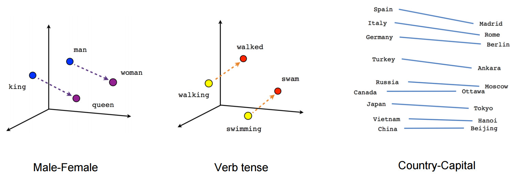

Experiments in Word Embeddings
Introduction
Recall that word embeddings are a way of representing words as vectors in a high-dimensional space. The idea is that words that are similar in meaning should be close together in this space. Word embeddings are often used as a way of representing words in natural language processing tasks, such as sentiment analysis, machine translation, and named entity recognition. Figure 1 schematically illustrates how words are represented in a vector space.
In this set of experiments, we’ll be using some online tools that allow us to explore word embeddings. We’ll be using the TensorFlow Embedding Projector and the Word2Vec tool from Google.
TensorFlow Embedding Projector
The TensorFlow Embedding Projector is a web-based tool that allows you to visualize word embeddings in a 3D space. You can use it to explore the relationships between words and see how they are clustered together. Navigate to the TensorFlow Embedding Projector and experiment a bit.
By mousing over the points in the 3D space, you can see the words that are closest to a given word. You can also search for a specific word and see how it is related to other words in the space. If you click on a word, you can see a list of the words that are closest to it (based on cosine similarity in the embedding space, not necessarily in the 2D projection).
WebVectors
Find words with similar meanings
In this page, you can supply a word and the tool will find words that are similar in meaning. The “model” choice is based on the text that was used to train the embeddings (eg. Wikipedia, Google News, etc.). The numbers next to the words are the cosine similarity between the input word and the word in the list.
Exercise: Navigate to http://vectors.nlpl.eu/explore/embeddings/en/associates/ and experiment a bit.
Visualizing word relationships
This little tool allows you to visualize word embeddings in 2D. You can see how words are related to each other based on their embeddings. You’ll supply a list of words and the tool will show you how they are related to each other using TSNE or PCA (these are dimensionality reduction techniques that allow you to visualize high-dimensional data in 2D). The “model” choice is based on the text that was used to train the embeddings (eg. Wikipedia, Google News, etc.).
Exercise: Navigate to http://vectors.nlpl.eu/explore/embeddings/en/visual/ and experiment a bit.
Semantic calculator

Calculate ratios, such as «find a word D related to the word C in the same way as the word A is related to the word B». An example is given in the placeholder: which word is in the same relation to the word «father» as «daughter» is to «mother»? The answer is «son». The model calculates the difference between the vectors of «mother» and «daughter» and adds it to the vector of «father». After doing so, the word with the closest vector to the result is output, which in this case is «son».
So, what does the difference between the vectors of «mother» and «daughter» represent? It represents the concept of a parent-child relationship. By adding this difference to the vector of «father», the model is looking for a word that is related to «father» in the same way that «daughter» is related to «mother». In this case, the answer is «son».
Exercise: Navigate to http://vectors.nlpl.eu/explore/embeddings/en/calculator/ and experiment a bit, perhaps trying some of the examples from Table 1.
A few examples to try:
| Word 1 | Word 2 | Word 3 | Word 4 |
|---|---|---|---|
| dog | puppy | cat | ? |
| king | man | queen | ? |
| cat | kitten | horse | ? |
| king | boyfriend | queen | ? |
| heart | lungs | stomach | ? |
Footnotes
https://doi.org/10.1371/journal.pone.0231189↩︎